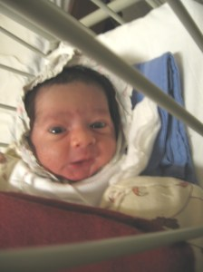

पिछले महीने ही हमने एक पोस्ट लिखी थी अरे, सब लोग हमें बधाई दो रे! तभी हमने आपसे कहा था कि आपको जल्दी ही एक और खुशखबरी सुनायेंगे। हाँ तो खुशखबरी हम सबके प्रिय यूनुस भाई के घर में आज सुबह आ चुकी है।
रेडियो सखी के नाम से जानी मानी, विविध भारती की अनाऊंसर और बतकही नामक ब्लॉग की लेखिका ममता जी और रेडियो के अलावा लेखन और ब्लॉगिंग का जाना माना नाम यूनुस खान दम्पति के यहाँ आज सुबह (26 फरवरी को ) ही पुत्र ने जन्म लिया है।
बच्चे का फिलहाल फोटो उपलब्ध नहीं है, उपलब्ध होते ही पोस्ट किया जायेगा।
यह लिजिये ये है जूनियर यूनुस जी!

मेरी तथा हिन्दी चिट्ठा जगत की ओर से ममता सिंह-यूनुस खान जी एवं उनके पूरे परिवार को ढ़ेरों बधाईयाँ।